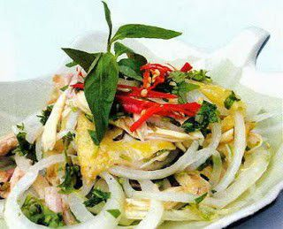

- Gà ta: 1 con
- Rau răm: 1 mớ
- Hành tây: 1 củ
- Chanh: 2 quả
- Gia vị: muối, đường, tiêu xay.

- Gà ta làm sạch, luộc chín và để cho nguội, ráo nước. Lòng gà có thể đem luộc chung để bóp rau răm hoặc làm lòng gà xào mướp.
- Rau răm nhặt rửa sạch, ngâm qua nước muối loãng, vớt ra để ráo, thái nhỏ.
- Hành tây: bóc vỏ, thái nhỏ rồi ngâm trong nước có pha 2 thìa giấm cho bớt hăng rồi vớt ra âu
- Chanh bổ đôi, vắt lấy nước cốt.
- Thịt gà bóc lấy thịt cho vào âu, nếu dùng cả phần xương để bóp thì nên bóc dối một chút, còn không thì bóc hết thì, xương bỏ, hoặc cho vào nồi cháo gà (cùng với đầu cổ cánh). Cho hành tây, rau răm vào. Cho nước cốt chanh, 1 thìa đường, 1 thìa cà phê muối, tiêu, mỡ tỏi trộn đều, nhẹ tay.
- Cuối cùng cho Gà bóp rau răm ra đĩa và thưởng thức. Món này chỉ lên làm ngày trước lúc ăn, không nên để lâu quá nửa tiếng sẽ không ngon.